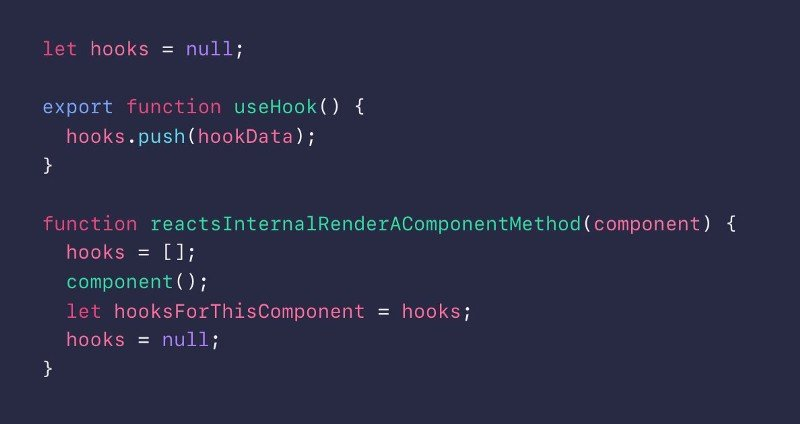

数据结构
基础的数据结构
这篇文章不是讲解数据结构的文章，而是结合现实的场景帮助大家理解和复习数据结构与算法， 如果你的数据结构基础很差，建议先去看一些基础教程，再转过来看。
本篇文章的定位是侧重于前端的，通过学习前端中实际场景的数据结构，从而加深大家对数据结构的理解和认识。
线性结构
数据结构我们可以从逻辑上分为线性结构和非线性结构。线性结构有 数组，栈，链表等， 非线性结构有树，图等。
其实我们可以称树为一种半线性结构。
需要注意的是，线性和非线性不代表存储结构是线性的还是非线性的，这两者没有任何关系，它只是一种逻辑上的划分。 比如我们可以用数组去存储二叉树。
一般而言，有前驱和后继的就是线性数据结构。比如数组和链表。其实一叉树就是链表。
数组
数组是最简单的数据结构了，很多地方都用到它。 比如有一个数据列表等，用它是再合适不过了。 其实后面的数据结构很多都有数组的影子。
我们之后要讲的栈和队列其实都可以看成是一种受限的数组, 怎么个受限法呢？我们后面讨论。
我们来讲几个有趣的例子来加深大家对数组这种数据结构的理解。
React Hooks
Hooks 的本质就是一个数组， 伪代码：

那么为什么 hooks 要用数组？ 我们可以换个角度来解释，如果不用数组会怎么样？
<pre class="calibre18">```
<span class="hljs-function"><span class="hljs-keyword">function</span> <span class="hljs-title">Form</span>(<span class="hljs-params"></span>) </span>{
<span class="hljs-title">// 1. Use the name state variable</span>
<span class="hljs-keyword">const</span> [name, setName] = useState(<span class="hljs-string">"Mary"</span>);
<span class="hljs-title">// 2. Use an effect for persisting the form</span>
useEffect(<span class="hljs-function"><span class="hljs-keyword">function</span> <span class="hljs-title">persistForm</span>(<span class="hljs-params"></span>) </span>{
localStorage.setItem(<span class="hljs-string">"formData"</span>, name);
});
<span class="hljs-title">// 3. Use the surname state variable</span>
<span class="hljs-keyword">const</span> [surname, setSurname] = useState(<span class="hljs-string">"Poppins"</span>);
<span class="hljs-title">// 4. Use an effect for updating the title</span>
useEffect(<span class="hljs-function"><span class="hljs-keyword">function</span> <span class="hljs-title">updateTitle</span>(<span class="hljs-params"></span>) </span>{
<span class="hljs-params">document</span>.title = name + <span class="hljs-string">" "</span> + surname;
});
<span class="hljs-title">// ...</span>
}
基于数组的方式，Form 的 hooks 就是 \[hook1, hook2, hook3, hook4\], 我们可以得出这样的关系， hook1 就是\[name, setName\] 这一对， hook2 就是 persistForm 这个。
如果不用数组实现，比如对象，Form 的 hooks 就是